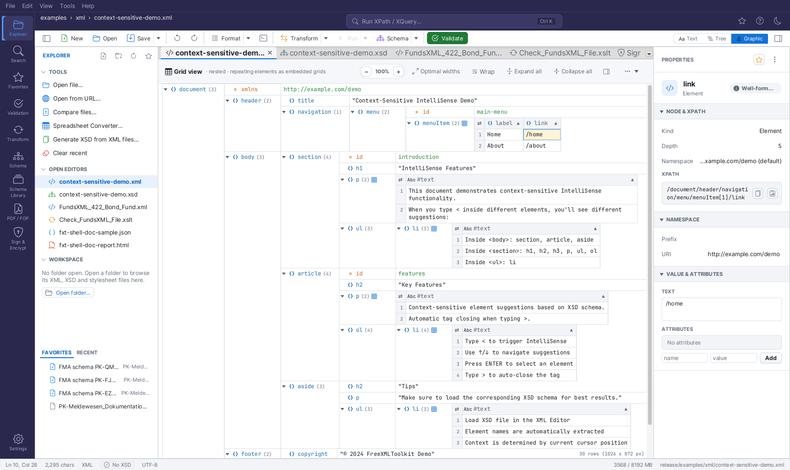
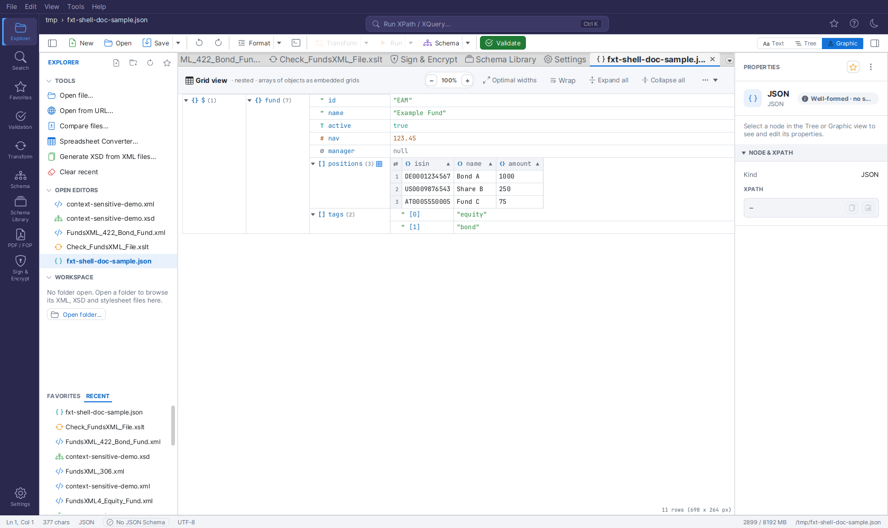

Grid View¶
The Graphic view of an XML or JSON document is an editable, XMLSpy-style grid: nested blocks for containers, repeating elements as tables, inline editing, drag & drop and search. Switch to it with the Graphic button of the view switch in the editor toolbar.
The Grid (Graphic view for XML)¶
When an XML-instance document (XML, XSLT, or Schematron) is in the Graphic view, the editor shows the editable grid, laid out like XMLSpy's Grid View:

- A header strip at the top reads "Grid view · nested · repeating elements as embedded
grids" and offers the zoom pill (
− 100% +), Optimal widths, the Wrap toggle, Expand all / Collapse all, and a ⋯ menu with the cell-height limit. In a narrow editor column the strip first drops its subtitle and shows the tool buttons as icons only (hover for their names); narrower still, only the title icon, the zoom pill and ⋯ remain, and Optimal widths, Wrap, Expand all / Collapse all and the entry helpers toggle become entries of the ⋯ menu, so every action stays reachable. - Nested containers. Every element is a row with a name cell (expand arrow, type icon, bold name) and, to its right, either its value cell or the block of its children. A child block is docked at the parent's value column, so the structure reads as nested boxes; an expanded container's name cell spans its whole child block. Each block has its own name-column width (the widest name in it).
- Type icons follow XMLSpy:
<>element,=attribute,Abctext,[ ]CDATA,<!comment,<?processing instruction. Colours come from the application theme (light/dark). - Attributes always show as
=rows directly beneath their element - also while the element itself is collapsed. - Collapsed containers show a grey one-line preview of their content (the markup without whitespace, cut off with "…"); hovering the preview shows a longer excerpt as a tooltip.
- Counts. A container's name is followed by its child count
(n); a repeating group shows the number of its members and a small table glyph. - Nothing is cut off. Values take the width their content needs; long values wrap onto further lines (the row grows). Very wide content is reached with the horizontal scrollbar (Shift+wheel).
- Zoom the whole grid - text, rows, icons and embedded tables - with Ctrl+mouse wheel,
Ctrl + / Ctrl − (10 % steps, 50-300 %) or the
−/+buttons; Ctrl 0 or a click on the percentage resets to 100 %. The zoom factor is remembered across files, XML and JSON grids and restarts. - Repeating elements (two or more siblings with the same name) are rendered as an
embedded table beside the group's name cell: one row per element (numbered in the
first column), one column per attribute (
=) and child element (<>). Click the small arrow at the right of a column header to sort the group (also: Sort Column in the context menu); cells with nested structure expand inline. Right-click a cell that is an element of its own (e.g.Identifiersof anAssetrow): the node actions of the context menu (Add Child Element / Attribute, Rename, Copy, Delete, Move, …) act on that element; whole-row actions are in the Table submenu (Insert Row Before/After, Append Row, Delete Row). - Every node looks like a root node, at any depth. An opened table cell shows its content as
a grid of its own: expandable rows, blocks and - for repeating children - a table again
(or numbered rows
<1>,<2>, … after a click on the table glyph), whose cells open the same way, however deep tables and rows are nested. A column with several children of one name (e.g. fourPositions of aWaehrung) is one cell (4 × <Position>) holding them all. Rows inside cells are selected, edited (double-click), expanded and navigated with the arrow keys like any other row (Left at the top of a cell's grid returns to the cell); tables inside cells sort, flip and edit like the outer ones. Hover, the name-column separators of blocks, column handles and column drags of tables, Optimal widths and drag & drop of rows (with auto-scroll at the top and bottom edge) work at every depth too. Open cells, expanded rows, dragged widths and table/flip choices at every depth survive edits. - Open whole rows and columns. Click a row number to select the whole row, click a column header (its name, not the arrow) to select the whole column; Shift+click extends to more rows or columns. Then press + to open the nested cells of the selection one level, and again for the next level inside them; − closes the deepest open level first, then the cells. The same entries are in the Table submenu (Expand / Collapse Selected Cells). Without a table selection, + / − open and close the selected grid rows one level. Open cells stay open after edits.
- Table or rows. The small table glyph after the group's name (or the context menu's
Display as Table) switches the group between the table and XMLSpy's standard display,
where every member is its own row numbered
<1>,<2>, … The choice is kept per group while the document is open. - Flip Rows/Columns. The corner cell of a table (or the context menu entry) transposes it: the columns become rows and the numbered members become columns - handy for wide tables with few rows. Sorting, editing and the inline sub-trees keep working.
- Whole rows and columns. Right-click inside a table for the Table submenu: Insert
Row Before / After and Append Row add a member with every column present but empty;
Insert Column Before / After… adds an attribute (type
@name) or a child element (name) to every member; Rename Column… (also: double-click a column header) renames it in every member. Each of these is one undo step. Typing into an empty cell whose member lacks that child element creates the element. Drag a column header onto another header to move that column - a blue line shows where it lands; the child element (or attribute) moves in every member, one undo step. Attributes move only among attributes. - Cell colours. Settings → Editor → GRID TABLE COLOURS sets your own colours for table headers, missing cells, the selection and the focus frame - separately for the light and the dark theme (switch the theme to set the other one). Open grids repaint at once; switching the option off returns to the theme colours.
- Spreadsheet exchange. Click a table cell to select it, Shift+click another cell
(or a row number) to select a range, Ctrl+A selects the whole table. Ctrl+C copies
the selection as tab-separated text (the whole table with a header line); the context menu
offers Copy Table as Tab-separated Text. Values arrive in the spreadsheet unchanged and
each in its own cell, even when they contain tabs, line breaks or quotes (the clipboard holds
quoted text plus an HTML table; values such as
00123stay text). Copy a range in Excel or LibreOffice, select a table cell and press Ctrl+V: the values fill the table from that cell to the right and down, overwriting existing cells; extra rows become new elements. One undo step. - Column widths. Name columns and table columns size themselves to their content. Drag the hairline between a name column and its values (or a column separator in a table's header row) to resize it - text re-wraps to the new width - and double-click the line to return to automatic sizing. Each nested block has its own name-column width. Optimal widths in the header resets every column at once. Dragged widths survive edits and undo.
- Wrap (header toggle, remembered across restarts) switches word wrap off: every value stays on one line and the grid grows to the right instead. The ⋯ menu limits the cell height to 3, 6 or 12 lines (longer values end with "…"), also remembered.
- Keyboard navigation works as soon as the view opens (no click needed): ↑/↓ walk the rows, → expands a collapsed element, ← collapses it (or jumps to the parent), Space or Enter toggles a container (on a leaf row Enter starts renaming it), Home/End jump to the first/last row, F2 renames, and the usual Ctrl+C/X/V, Ctrl+D (duplicate) and Delete act on the selected node.
- Several rows at once. Ctrl+click adds or removes a row from the selection, Shift+click selects every sibling between the selected row and the clicked one. Shift+click on the arrow of a selected row expands or collapses all selected rows.
- Expand Fully (Ctrl+Shift++) opens the selected container with everything below it; Collapse Unselected (Ctrl+Shift+−) folds every container except the path to the selection. Both, plus Expand All / Collapse All, are in the context menu. The expanded state and the selection survive edits, undo and sorting (rows are tracked by their XPath).
- Editing every node kind. Double-click a value to edit it - with a bound schema the editor follows the declared type: a dropdown for enumerations (elements and attributes, in tree rows, table columns and opened cells), date pickers, number spinners, length/pattern checks - also comments, CDATA sections and processing instructions; double-click the name of an attribute or a processing instruction to rename it. Click the type icon of a row (or press Ctrl+Alt+T) to change the node's type - element, attribute, text, CDATA, comment or processing instruction; name and value are kept, attributes move into their element's attribute list. Containers with child elements keep their type. Wrap in Element… (Ctrl+Alt+W, context menu) puts a new parent element around the selected node. Edit as Raw Text… (Ctrl+Alt+R) opens the selected element's content as markup (entities unresolved) and parses it back; not well-formed markup is reported and the editor reopens. All of these are undoable.
- Sibling groups for very large files (⋯ menu → Sibling groups: 100 / 1,000 / 10,000
nodes, remembered): an element with more children than that shows them in collapsed groups
such as
record <1001..2000>; opening a group closes the other groups of the same element. - Validation markers. After a validation (Validation panel), rows whose element has a problem show a red ! at the end of the name cell and a red value; hover the row for the message. Problems inside a repeating group mark the member's row number. The markers clear on the next grid edit and come back with the next validation.
- Split view. The header's ⋯ menu splits the grid top / bottom or side by side into two views of the same document; each scrolls, expands and selects on its own, and an edit in one appears in the other at once. Single view closes the second one.
- Entry helpers. The header's panel button (right of Collapse all) opens the entry
helpers beside the grid, as in XMLSpy. They need an XSD bound to the document and follow the
selected row. Siblings lists the attributes and elements the schema allows next to the
selected node, Children lists those allowed inside the selected element, and Values
lists the enumeration values of the selected element or attribute. Entries that are already
there and cannot occur again are greyed out. Required ones (
use="required",minOccurs≥ 1 outside an optional or choice group) carry a red !. A double-click inserts: - Siblings: after the selected node; the buttons insert before it or append at the end.
- Children: as the last child of the selected element. An attribute starts with its schema default.
- Values: sets the value.
Every insertion is one undo step. The panel stays open or closed across sessions.
- Scroll header. While you scroll through a long element, a bar at the top shows the
path of containers you are inside (root › section › body); click one to select it and
scroll back to its start.
- Drag & drop. Drag a node by its name cell: drop it on the upper or lower third of another
name cell to place it before / after that node, on the middle (or anywhere in an expanded
element's cell) to append it as a child. A blue line or frame shows the target; hold Ctrl
to copy instead of move. Text dragged in from other applications replaces a value when dropped
on a value cell; dropped on a name cell, an XML fragment becomes new nodes and plain text a
text node. A node is never dropped into its own subtree; every drop is one undo step.
- Filters. Right-click an element → Filter… and enter an XQuery 3.1 expression evaluated
with that element as context, e.g. Month[number(Min) > 10]: below the element only the
matching nodes (with their ancestors and subtrees) stay visible, repeating groups shrink to
their matching members. A blue funnel line under the element shows the expression - click
the funnel to switch the filter off and on, double-click the line to edit it. To remove a
filter, right-click its funnel line (or the element / the table cell it was set on) →
Remove Filter; Remove All Filters clears every filter of the view. Filter to Focus filters the root down to the selected node - on a row
of an embedded table, the table keeps only that row. Right-clicked inside a table, Filter…
filters the element that holds the table (on a group row too). On a cell with nested content
(e.g. 22 × <Datenpunkt>) it filters that cell's content only: the cell opens and the filter
goes to its record, every other node stays complete. Inside an opened cell the target is
the cell's record: in the Datenpunkt table of a PK.006… row, Filter… with
Datenpunkt[starts-with(Wert_C0010PK, 'AT')] leaves only those Datenpunkte in that cell; the
funnel line is the cell's first row and the record's formulas still sum all of its data. A
filter higher up reduces the opened cells below it as well, e.g. on the root
*/Datenpunkt[starts-with(Wert_C0010PK, 'AT')] for every record at once. Filters
only change the display; an invalid expression is reported and filters nothing. A filter
lives while the document is open unless you save it: right-click it → Save Filter in
Document stores it in the file as <?fxt-filter expression="…"?> in the filtered element
(one undoable edit; its funnel line then ends in · saved). A saved filter always comes back
switched off when the file is opened, so nobody sees a filtered grid without knowing it:
the grey funnel line shows it, and a click on the funnel or right-click → Filter Active
switches it on. Editing a saved filter updates the file; Remove Filter / Remove All
Filters also remove it from the file, unticking Save Filter in Document only from the
file.
- Formulas. Right-click an element → Add Formula…: a name and an XQuery 3.1 expression
evaluated with that element as context (e.g. avg(Month/Min)). The formula row (icon ƒ)
shows the expression and, below it, the live result - or the error in red; double-click the
expression or the name to edit it. Formula rows are listed first under their element, above
its tables and other children (in the file they stay where they are). A new formula is
selected and its element expanded.
Right-clicked inside a table, the formula goes to the element that holds the table (e.g.
avg(Month/Min) on the parent of the Month rows), since a table cell cannot show it. When
that element is itself a row of an outer table, its formulas are listed first in its opened
cell — in the cell of the group the expression names (sum(Datenpunkt/Wert) → the
Datenpunkt cell), otherwise in its first cell. An element can hold several named formulas,
e.g. one sum per numeric column; format-number(sum(Datenpunkt/Wert ! xs:decimal(.)), '#,##0.00')
gives an exact sum with two decimals and thousands separators (12,005,649.85). The German
number format is predeclared as de: format-number(…, '#.##0,00', 'de') gives
12.005.649,85. Formulas are saved in the file as
<?fxt-formula name="…" expression="…"?> instructions. Store Formula Result in Document
also writes the result into an element named after the formula, right after it;
Recalculate Stored Formula Results refreshes all of them in one undo step.
- Search (Ctrl+F) finds names and values in the rows and in the cells of embedded tables,
including the content of cells that are still closed (nested elements, attributes such as
ccy="EUR") at any depth; a hit opens the cells and expands what hides it, then selects it.
Enter / Shift+Enter walk through all hits.
- Copy XPath / Copy Node: the grid's context menu offers Copy XPath (Ctrl+Alt+X),
Copy Cell Content (Ctrl+Shift+C) and Copy Node (XML) (Ctrl+Alt+C); all three
shortcuts also work directly on the selected node. Ctrl+Shift+X toggles the Query
Console everywhere, including while the grid has focus.
- Go to Definition: right-click an element → Go to Definition opens the bound XSD in the
Graphic view, expanded along the element's path, with the card of its declaration selected - see
Go to Definition. The entry is disabled while no schema is bound.
The Grid (Graphic view for JSON)¶
JSON documents (.json, .jsonc, .json5) get the same grid in the Graphic view -
same header strip, same rows, same keyboard shortcuts and context menu - so a JSON file
looks and feels exactly like an XML file in the grid:

- The root value is the
$row; object properties and array items ([0],[1], …) are the rows beneath it. Objects and arrays are collapsible containers showing their child count; scalar properties show askey = valuerows. - Every row carries a type glyph in its own colour:
{}object,[]array,"string,#number,T/Fboolean and∅null. Strings are shown quoted (= "Alice") - like XML leaf values - so"42"and42are never confused. - Arrays of objects are rendered as embedded grids (a table with one column per key, merged across all items), exactly like repeating elements in XML. The arrow in a column header sorts the array (numbers, dates and strings are recognised), nested objects expand inline; a click on the header's name selects the column, + / − open and close its nested objects level by level, as in XML.
- Inline editing keeps the value's type: double-click a number and type a number
(anything else is rejected with a hint and the editor stays open), booleans toggle between
true/false,nullstaysnullunless you type text. Double-click a key to rename it (duplicate keys are refused). - The context menu mirrors the XML one: Add (Property / Array Item / Sibling Before /
After), Rename Key (F2), Duplicate (Ctrl+D), Copy / Cut / Paste as Sibling /
Paste as Child, Copy Cell Content, Copy JSONPath (Ctrl+Alt+X - e.g.
$.items[1].name), Copy Node (JSON) (Ctrl+Alt+C), Change Type (String / Number / Boolean / Null / Object / Array), Move Up / Down (Alt+↑/↓), Expand Fully / Collapse Unselected, Display as Table, Flip Rows/Columns, Copy Table as Tab-separated Text, Expand All / Collapse All, Sort Column and Delete. Copy Cell Content is Ctrl+Shift+C, as in the XML grid. - All edits go through the document's undo history (Ctrl+Z / Ctrl+Y) and are written back into the text - the Text, Tree and Graphic views share one model, and the Properties inspector edits keys and values from any of them.
- Same layout and controls as the XML grid. Objects and arrays are nested blocks with one-line previews when collapsed; the header strip offers the zoom pill, Optimal widths, Wrap, Expand all / Collapse all and the ⋯ menu (cell-height limit, sibling groups); name and table columns can be dragged to a new width (double-click to auto-fit). Expand Fully (Ctrl+Shift++) and Collapse Unselected (Ctrl+Shift+−), Display as Table / Flip Rows/Columns for arrays of objects, the scroll header and the search in table cells all work as described above. Table cells can be selected and copied as tab-separated text (Ctrl+C or Copy Table as Tab-separated Text); Ctrl+V overwrites existing cells only. The zoom factor is shared with the XML grid.
- Change a value's type by clicking its type glyph (or Ctrl+Alt+T on the selected row):
a popup lists the other types. Number ↔ String ↔ Boolean ↔ Null convert the value
(
"42"→42); Object and Array start empty. One undo step. - Drag & drop: drag a row by its name cell onto another row - the upper part of the name
cell inserts before it, the lower part after it, the middle of an object or array
into it; hold Ctrl to copy instead of move. A property moved into another object
keeps its key (made unique with
_copyif it is taken); an item moved into an object gets the keyitem. JSON text dragged in from another application becomes a new value (an object dropped into an object adds its properties), plain text a string; dropped on a value cell it replaces the value. A node can never be dropped into itself. - Table submenu (right-click a cell of an array-of-objects table): Insert Row Before / After, Append Row (a new object with every column as an empty string), Insert Column Before / After… (the key in every object, next to the clicked column) and Rename Column… (also a double-click on the column header; refused as a whole when an object already uses the new key). Each is one undo step.
- XML only: Wrap in Element, Edit as Raw Text, filters, formulas and validation markers.
Comments and JSON5 syntax are not preserved
The grid edits the parsed model. Comments (JSONC) and JSON5 syntax (unquoted keys, single quotes, trailing commas) are not part of it, so the first grid edit rewrites the file as standard JSON. The grid shows a warning the first time it opens such a file; if you need to keep the comments, edit in the Text view instead.